This follows MixSIAR’s wolves example (Semmens et al. 2009 data, as
analysed in Stock et al. 2018): 66 wolves from 8 packs in 3 regions,
whose diet is a mix of deer, marine mammals and salmon, measured with
two tracers (δ¹³C and δ¹⁵N). Pack is a random effect nested within the
random effect Region, and the sources’ isotope values were measured
separately in each region. The model and data are exactly as in
MixSIAR’s vignette; only the fitting call changes,
run_pfn() in place of write_JAGS_model() and
run_model().
The data
mix <- load_mix_data(
filename = system.file("extdata", "wolves_consumer.csv", package = "MixSIARPFN"),
iso_names = c("d13C", "d15N"), factors = c("Region", "Pack"),
fac_random = c(TRUE, TRUE), fac_nested = c(FALSE, TRUE), cont_effects = NULL)
source <- load_source_data(
filename = system.file("extdata", "wolves_sources.csv", package = "MixSIARPFN"),
source_factors = "Region", conc_dep = FALSE, data_type = "means", mix)
discr <- load_discr_data(
filename = system.file("extdata", "wolves_discrimination.csv", package = "MixSIARPFN"),
mix)
mix
#> Consumer data: 66 consumers, 2 tracer(s): d13C, d15N
#> Random effect Region with 3 levels
#> Random effect Pack with 8 levels
source
#> Source data: 3 sources: Deer, Marine Mammals, Salmon
#> Given by RegionThe isospace plot shows the wolves, coloured by region, and each source’s mean in each region after adding the discrimination factor, with ±1 SD:
plot_data(mix = mix, source = source, discr = discr)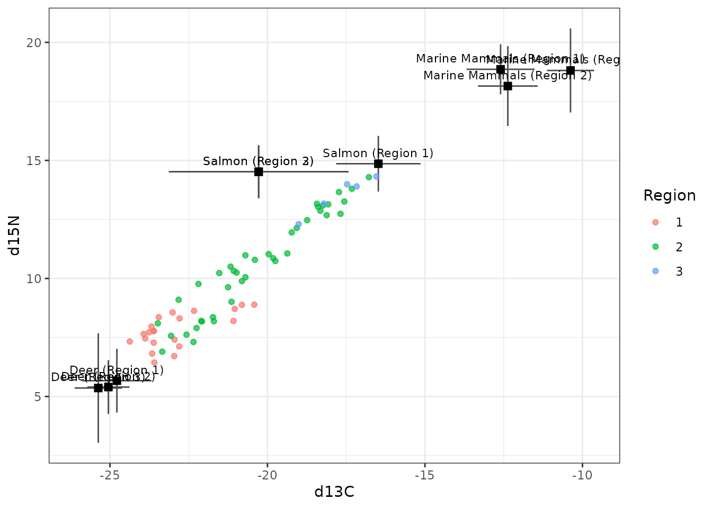
Fitting the model
Residual * Process error and MixSIAR’s uninformative prior, as in MixSIAR’s vignette. The network for this error structure is downloaded the first time it is needed (about 36 MB) and cached.
time <- system.time(
fit <- run_pfn(mix, source, discr, alpha.prior = 1,
resid_err = TRUE, process_err = TRUE)
)
fit
#> MixSIARPFN fit (Residual * Process error), 3 sources, in 0.5 s
#> Marginal posteriors (no joint draws). Global diet:
#> source mean sd 2.5% 97.5%
#> Deer 0.485 0.201 0.097 0.850
#> Marine Mammals 0.206 0.161 0.013 0.632
#> Salmon 0.321 0.199 0.028 0.770
#> Use output_pfn() for every proportion and parameter.The fit took 0.5 seconds.
Results
output_pfn() takes MixSIAR’s output_options
list. It prints the summary statistics, with MixSIAR’s row names, and
draws a posterior density plot for the global diet, each effect and each
parameter (here shown, not saved):
out <- output_pfn(fit, mix, source,
output_options = list(summary_save = FALSE, plot_post_save_pdf = FALSE))
knitr::kable(round(summary_table(fit), 3))| Mean | SD | 2.5% | 5% | 25% | 50% | 75% | 95% | 97.5% | |
|---|---|---|---|---|---|---|---|---|---|
| Epsilon.1 | 0.953 | 0.560 | 0.267 | 0.328 | 0.584 | 0.844 | 1.194 | 1.922 | 2.247 |
| Epsilon.2 | 0.536 | 0.302 | 0.215 | 0.245 | 0.361 | 0.477 | 0.642 | 1.002 | 1.176 |
| Region.SD | 2.086 | 2.234 | 0.155 | 0.277 | 0.870 | 1.474 | 2.441 | 5.961 | 8.544 |
| Pack.SD | 1.038 | 0.808 | 0.370 | 0.422 | 0.630 | 0.852 | 1.198 | 2.170 | 2.772 |
| p.global.Deer | 0.485 | 0.201 | 0.097 | 0.143 | 0.338 | 0.490 | 0.634 | 0.806 | 0.850 |
| p.global.Marine Mammals | 0.206 | 0.161 | 0.013 | 0.023 | 0.086 | 0.166 | 0.282 | 0.535 | 0.632 |
| p.global.Salmon | 0.321 | 0.199 | 0.028 | 0.048 | 0.164 | 0.291 | 0.449 | 0.697 | 0.770 |
| p.Region 1.Deer | 0.747 | 0.182 | 0.222 | 0.365 | 0.676 | 0.791 | 0.870 | 0.954 | 0.973 |
| p.Region 1.Marine Mammals | 0.097 | 0.109 | 0.000 | 0.000 | 0.019 | 0.068 | 0.138 | 0.291 | 0.379 |
| p.Region 1.Salmon | 0.183 | 0.153 | 0.000 | 0.003 | 0.071 | 0.155 | 0.253 | 0.475 | 0.585 |
| p.Region 2.Deer | 0.475 | 0.172 | 0.119 | 0.182 | 0.361 | 0.478 | 0.592 | 0.755 | 0.806 |
| p.Region 2.Marine Mammals | 0.176 | 0.141 | 0.000 | 0.002 | 0.061 | 0.154 | 0.260 | 0.437 | 0.508 |
| p.Region 2.Salmon | 0.440 | 0.222 | 0.014 | 0.049 | 0.282 | 0.447 | 0.600 | 0.800 | 0.859 |
| p.Region 3.Deer | 0.309 | 0.214 | 0.000 | 0.006 | 0.135 | 0.289 | 0.455 | 0.698 | 0.773 |
| p.Region 3.Marine Mammals | 0.244 | 0.187 | 0.000 | 0.003 | 0.091 | 0.215 | 0.361 | 0.594 | 0.671 |
| p.Region 3.Salmon | 0.428 | 0.294 | 0.002 | 0.011 | 0.171 | 0.401 | 0.664 | 0.945 | 0.985 |
| p.Pack 1.Deer | 0.863 | 0.044 | 0.767 | 0.787 | 0.838 | 0.866 | 0.892 | 0.927 | 0.938 |
| p.Pack 1.Marine Mammals | 0.048 | 0.042 | 0.000 | 0.000 | 0.010 | 0.039 | 0.079 | 0.123 | 0.136 |
| p.Pack 1.Salmon | 0.091 | 0.064 | 0.000 | 0.001 | 0.031 | 0.092 | 0.141 | 0.195 | 0.212 |
| p.Pack 2.Deer | 0.735 | 0.056 | 0.610 | 0.637 | 0.703 | 0.741 | 0.774 | 0.817 | 0.830 |
| p.Pack 2.Marine Mammals | 0.088 | 0.081 | 0.000 | 0.000 | 0.011 | 0.062 | 0.162 | 0.228 | 0.244 |
| p.Pack 2.Salmon | 0.191 | 0.120 | 0.000 | 0.002 | 0.073 | 0.216 | 0.291 | 0.358 | 0.377 |
| p.Pack 3.Deer | 0.828 | 0.052 | 0.718 | 0.740 | 0.797 | 0.831 | 0.862 | 0.905 | 0.919 |
| p.Pack 3.Marine Mammals | 0.065 | 0.054 | 0.000 | 0.000 | 0.014 | 0.056 | 0.108 | 0.160 | 0.175 |
| p.Pack 3.Salmon | 0.123 | 0.080 | 0.000 | 0.002 | 0.051 | 0.128 | 0.185 | 0.249 | 0.268 |
| p.Pack 4.Deer | 0.498 | 0.094 | 0.305 | 0.341 | 0.439 | 0.502 | 0.562 | 0.643 | 0.668 |
| p.Pack 4.Marine Mammals | 0.115 | 0.118 | 0.000 | 0.000 | 0.013 | 0.067 | 0.206 | 0.343 | 0.369 |
| p.Pack 4.Salmon | 0.458 | 0.166 | 0.011 | 0.064 | 0.389 | 0.482 | 0.562 | 0.679 | 0.721 |
| p.Pack 5.Deer | 0.300 | 0.116 | 0.046 | 0.101 | 0.225 | 0.301 | 0.379 | 0.489 | 0.524 |
| p.Pack 5.Marine Mammals | 0.137 | 0.148 | 0.000 | 0.000 | 0.017 | 0.077 | 0.222 | 0.447 | 0.487 |
| p.Pack 5.Salmon | 0.630 | 0.188 | 0.046 | 0.235 | 0.551 | 0.659 | 0.751 | 0.876 | 0.918 |
| p.Pack 6.Deer | 0.734 | 0.059 | 0.600 | 0.630 | 0.701 | 0.740 | 0.774 | 0.817 | 0.830 |
| p.Pack 6.Marine Mammals | 0.120 | 0.082 | 0.000 | 0.000 | 0.035 | 0.135 | 0.190 | 0.235 | 0.247 |
| p.Pack 6.Salmon | 0.158 | 0.115 | 0.000 | 0.001 | 0.053 | 0.153 | 0.244 | 0.352 | 0.383 |
| p.Pack 7.Deer | 0.338 | 0.118 | 0.045 | 0.107 | 0.269 | 0.356 | 0.423 | 0.499 | 0.521 |
| p.Pack 7.Marine Mammals | 0.386 | 0.185 | 0.000 | 0.004 | 0.280 | 0.449 | 0.525 | 0.596 | 0.616 |
| p.Pack 7.Salmon | 0.300 | 0.261 | 0.000 | 0.003 | 0.077 | 0.232 | 0.471 | 0.821 | 0.915 |
| p.Pack 8.Deer | 0.195 | 0.143 | 0.000 | 0.001 | 0.069 | 0.180 | 0.306 | 0.443 | 0.475 |
| p.Pack 8.Marine Mammals | 0.298 | 0.186 | 0.000 | 0.001 | 0.130 | 0.329 | 0.461 | 0.554 | 0.578 |
| p.Pack 8.Salmon | 0.408 | 0.305 | 0.001 | 0.006 | 0.136 | 0.363 | 0.652 | 0.965 | 0.995 |
out$plots$global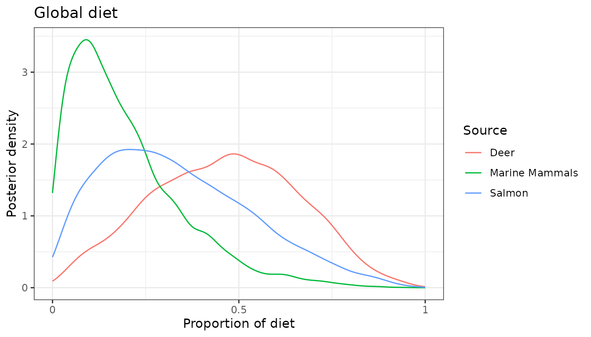
out$plots$Region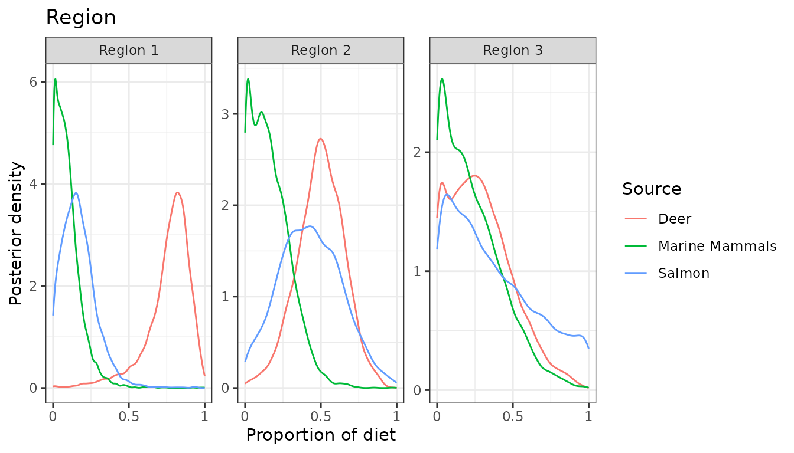
out$plots$Pack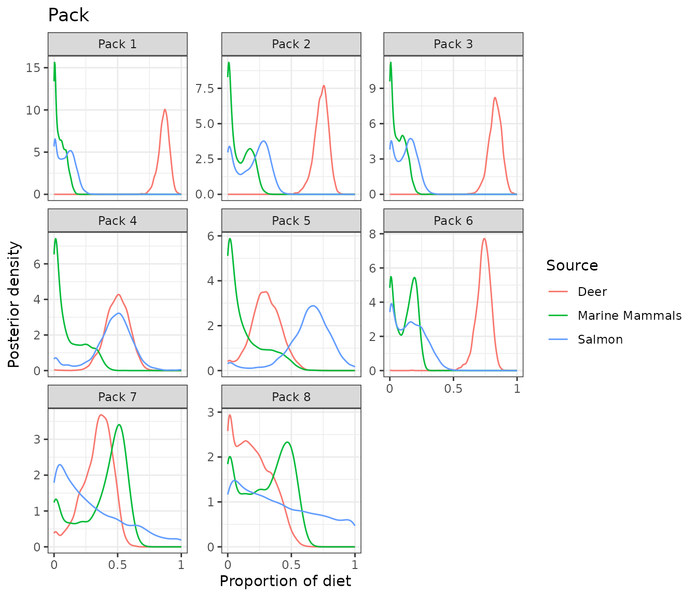
out$plots$Region.SD
out$plots$Pack.SD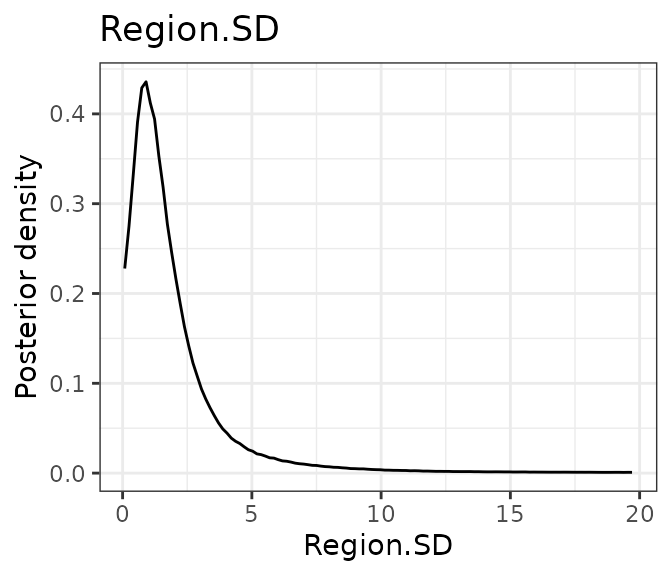
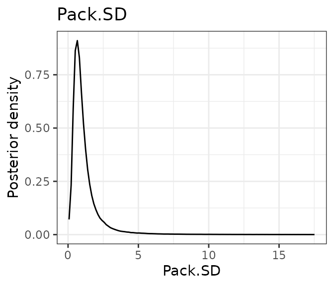
Each of these is a marginal posterior. The network gives each proportion’s posterior on its own, not joint draws, so the marginal means of one diet need not sum to exactly 1, and sums, differences or ratios of proportions cannot be computed from the output.
Comparison with MixSIAR
ref <- mixsiar_reference("wolves")
cmp <- compare_mixsiar(fit, ref$draws, ref$summary)MixSIAR 3.1.12 fitted the same model with 3 chains of 3,000,000 iterations (burn-in 1,500,000, thinned by 500), a run of about 6.3 hours that was needed for the Region SD to converge (largest Gelman-Rubin diagnostic 1.012). MixSIARPFN took 0.5 seconds.
The table gives both posteriors’ means, SDs and 95% intervals, and the Wasserstein-1 distance between them (W1: how far, on average, one posterior’s mass has to move to match the other, on the proportion scale; MixSIAR’s draws for the SDs and residual multipliers were not saved, so those rows have no W1):
show <- transform(cmp, `MixSIARPFN 95% CI` = sprintf("%.2f to %.2f", pfn_q2.5, pfn_q97.5),
`MixSIAR 95% CI` = sprintf("%.2f to %.2f", mixsiar_q2.5, mixsiar_q97.5),
check.names = FALSE)
knitr::kable(data.frame(
quantity = show$name,
`MixSIARPFN mean` = round(show$pfn_mean, 3), `MixSIAR mean` = round(show$mixsiar_mean, 3),
`MixSIARPFN SD` = round(show$pfn_sd, 3), `MixSIAR SD` = round(show$mixsiar_sd, 3),
show[c("MixSIARPFN 95% CI", "MixSIAR 95% CI")], W1 = round(show$w1, 3),
check.names = FALSE))| quantity | MixSIARPFN mean | MixSIAR mean | MixSIARPFN SD | MixSIAR SD | MixSIARPFN 95% CI | MixSIAR 95% CI | W1 |
|---|---|---|---|---|---|---|---|
| Region.SD | 2.086 | 1.147 | 2.234 | 1.212 | 0.16 to 8.54 | 0.05 to 4.15 | NA |
| Pack.SD | 1.038 | 1.299 | 0.808 | 0.626 | 0.37 to 2.77 | 0.56 to 2.78 | NA |
| Epsilon.1 | 0.953 | 1.042 | 0.560 | 0.380 | 0.27 to 2.25 | 0.48 to 1.95 | NA |
| Epsilon.2 | 0.536 | 0.465 | 0.302 | 0.189 | 0.22 to 1.18 | 0.21 to 0.93 | NA |
| p.global.Deer | 0.485 | 0.522 | 0.201 | 0.178 | 0.10 to 0.85 | 0.14 to 0.83 | 0.040 |
| p.global.Marine Mammals | 0.206 | 0.209 | 0.161 | 0.143 | 0.01 to 0.63 | 0.03 to 0.59 | 0.018 |
| p.global.Salmon | 0.321 | 0.268 | 0.199 | 0.161 | 0.03 to 0.77 | 0.04 to 0.67 | 0.055 |
| p.Region 1.Deer | 0.747 | 0.700 | 0.182 | 0.159 | 0.22 to 0.97 | 0.34 to 0.94 | 0.060 |
| p.Region 1.Marine Mammals | 0.097 | 0.117 | 0.109 | 0.101 | 0.00 to 0.38 | 0.00 to 0.39 | 0.024 |
| p.Region 1.Salmon | 0.183 | 0.183 | 0.153 | 0.140 | 0.00 to 0.58 | 0.00 to 0.52 | 0.012 |
| p.Region 2.Deer | 0.475 | 0.551 | 0.172 | 0.159 | 0.12 to 0.81 | 0.23 to 0.87 | 0.076 |
| p.Region 2.Marine Mammals | 0.176 | 0.178 | 0.141 | 0.108 | 0.00 to 0.51 | 0.03 to 0.42 | 0.028 |
| p.Region 2.Salmon | 0.440 | 0.271 | 0.222 | 0.149 | 0.01 to 0.86 | 0.05 to 0.61 | 0.172 |
| p.Region 3.Deer | 0.309 | 0.432 | 0.214 | 0.222 | 0.00 to 0.77 | 0.02 to 0.86 | 0.122 |
| p.Region 3.Marine Mammals | 0.244 | 0.265 | 0.187 | 0.198 | 0.00 to 0.67 | 0.01 to 0.78 | 0.022 |
| p.Region 3.Salmon | 0.428 | 0.303 | 0.294 | 0.223 | 0.00 to 0.98 | 0.01 to 0.90 | 0.131 |
| p.Pack 1.Deer | 0.863 | 0.855 | 0.044 | 0.030 | 0.77 to 0.94 | 0.80 to 0.91 | 0.014 |
| p.Pack 1.Marine Mammals | 0.048 | 0.054 | 0.042 | 0.038 | 0.00 to 0.14 | 0.00 to 0.13 | 0.007 |
| p.Pack 1.Salmon | 0.091 | 0.092 | 0.064 | 0.056 | 0.00 to 0.21 | 0.00 to 0.19 | 0.007 |
| p.Pack 2.Deer | 0.735 | 0.732 | 0.056 | 0.041 | 0.61 to 0.83 | 0.65 to 0.80 | 0.011 |
| p.Pack 2.Marine Mammals | 0.088 | 0.099 | 0.081 | 0.074 | 0.00 to 0.24 | 0.00 to 0.22 | 0.014 |
| p.Pack 2.Salmon | 0.191 | 0.169 | 0.120 | 0.109 | 0.00 to 0.38 | 0.00 to 0.34 | 0.025 |
| p.Pack 3.Deer | 0.828 | 0.831 | 0.052 | 0.037 | 0.72 to 0.92 | 0.75 to 0.90 | 0.010 |
| p.Pack 3.Marine Mammals | 0.065 | 0.066 | 0.054 | 0.047 | 0.00 to 0.18 | 0.00 to 0.16 | 0.007 |
| p.Pack 3.Salmon | 0.123 | 0.104 | 0.080 | 0.067 | 0.00 to 0.27 | 0.00 to 0.23 | 0.021 |
| p.Pack 4.Deer | 0.498 | 0.461 | 0.094 | 0.051 | 0.30 to 0.67 | 0.36 to 0.55 | 0.047 |
| p.Pack 4.Marine Mammals | 0.115 | 0.067 | 0.118 | 0.052 | 0.00 to 0.37 | 0.00 to 0.19 | 0.055 |
| p.Pack 4.Salmon | 0.458 | 0.472 | 0.166 | 0.088 | 0.01 to 0.72 | 0.29 to 0.63 | 0.051 |
| p.Pack 5.Deer | 0.300 | 0.292 | 0.116 | 0.064 | 0.05 to 0.52 | 0.16 to 0.41 | 0.042 |
| p.Pack 5.Marine Mammals | 0.137 | 0.079 | 0.148 | 0.066 | 0.00 to 0.49 | 0.00 to 0.23 | 0.062 |
| p.Pack 5.Salmon | 0.630 | 0.629 | 0.188 | 0.111 | 0.05 to 0.92 | 0.39 to 0.82 | 0.051 |
| p.Pack 6.Deer | 0.734 | 0.751 | 0.059 | 0.030 | 0.60 to 0.83 | 0.69 to 0.80 | 0.025 |
| p.Pack 6.Marine Mammals | 0.120 | 0.170 | 0.082 | 0.042 | 0.00 to 0.25 | 0.06 to 0.23 | 0.054 |
| p.Pack 6.Salmon | 0.158 | 0.078 | 0.115 | 0.063 | 0.00 to 0.38 | 0.00 to 0.24 | 0.080 |
| p.Pack 7.Deer | 0.338 | 0.370 | 0.118 | 0.053 | 0.05 to 0.52 | 0.24 to 0.45 | 0.056 |
| p.Pack 7.Marine Mammals | 0.386 | 0.490 | 0.185 | 0.080 | 0.00 to 0.62 | 0.28 to 0.59 | 0.109 |
| p.Pack 7.Salmon | 0.300 | 0.140 | 0.261 | 0.121 | 0.00 to 0.91 | 0.01 to 0.45 | 0.162 |
| p.Pack 8.Deer | 0.195 | 0.286 | 0.143 | 0.099 | 0.00 to 0.48 | 0.02 to 0.46 | 0.094 |
| p.Pack 8.Marine Mammals | 0.298 | 0.374 | 0.186 | 0.129 | 0.00 to 0.58 | 0.00 to 0.54 | 0.086 |
| p.Pack 8.Salmon | 0.408 | 0.339 | 0.305 | 0.219 | 0.00 to 0.99 | 0.02 to 0.96 | 0.110 |
The posterior densities side by side, for the global diet, the regions and the packs:
plot_compare(fit, ref$draws, block = "global")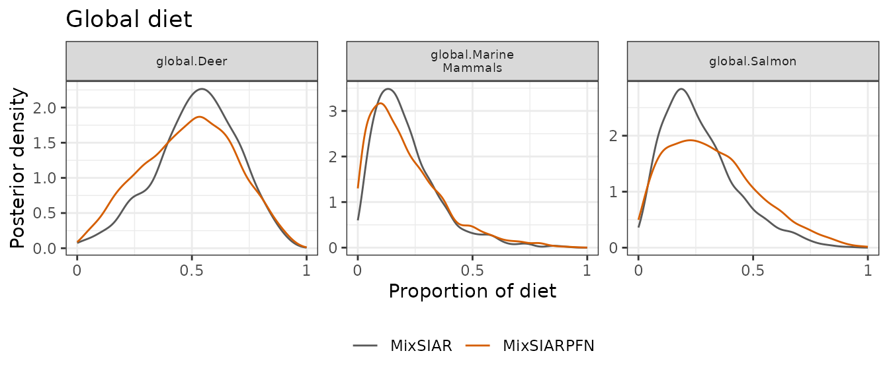
plot_compare(fit, ref$draws, block = "Region")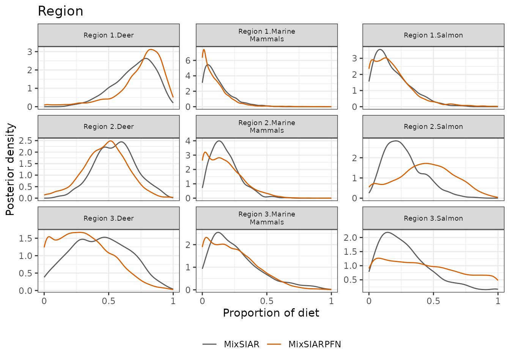
plot_compare(fit, ref$draws, block = "Pack")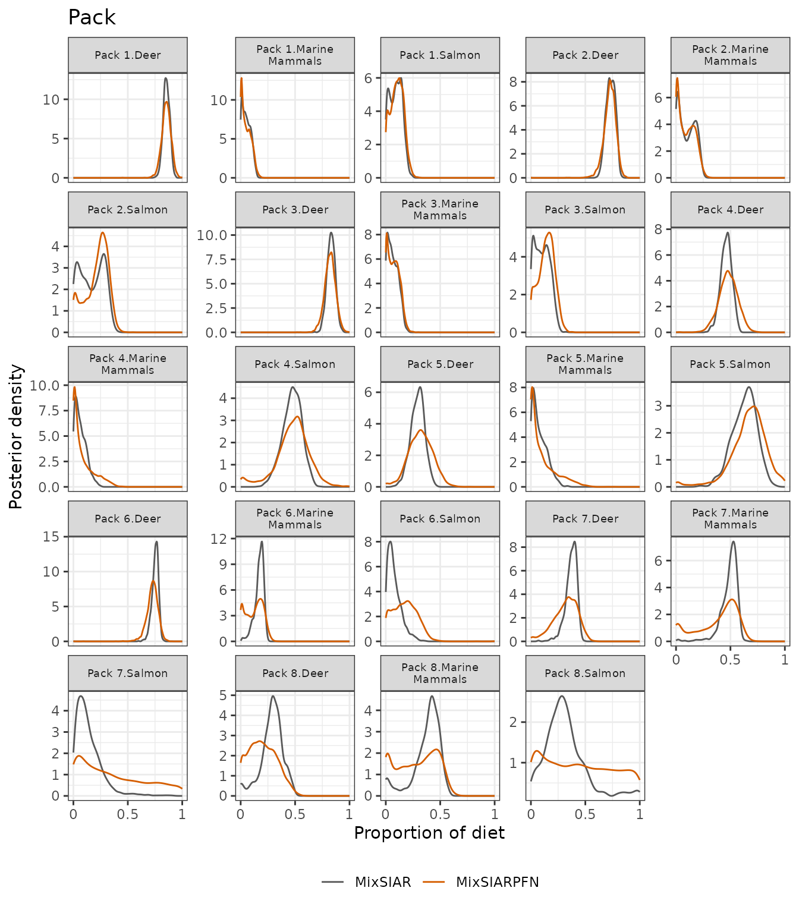
And every proportion’s posterior mean and SD against MixSIAR’s:
plot_compare(fit, ref$draws, type = "means")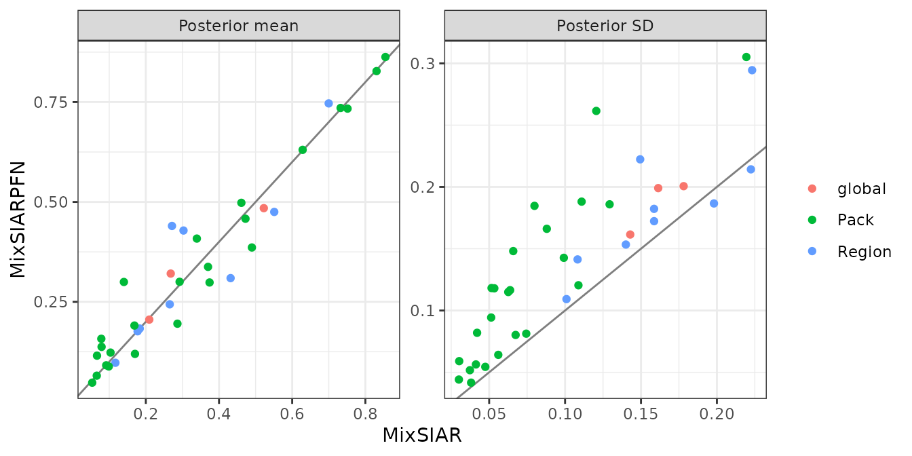
What this shows. For the global and region diets, MixSIARPFN’s posterior means differ from MixSIAR’s by 0.03 and 0.06 on average, against MixSIAR posterior SDs of about 0.16 and 0.16, and its posteriors are a little wider (median SD ratio 1.13 and 1.10). The pack diets differ more. Most pack means are close (median difference 0.02), but MixSIARPFN’s pack posteriors are wider (median SD ratio 1.58) and a few means are further off, the largest being Region 2.Salmon (0.44 against 0.27). The Region and Pack SDs and the residual multipliers are also wider. For a dataset like this, with many small levels, MixSIARPFN gives a quick first answer, and a MixSIAR run is the more precise one when time allows.
Does MixSIAR’s model fit these data?
The comparison above takes MixSIAR as the reference. That is fair
only where MixSIAR’s model describes the data, which a posterior
predictive check can test: MixSIAR’s fitted model generates new
datasets, one per posterior draw, and the real data are compared with
them pack by pack. MixSIARPFN gives marginal posteriors only, so it
cannot run this check itself; the results come from a separate MixSIAR
run with the same model and data, shipped with the package
(mixsiar_reference("wolves")$ppc). For each pack, the plot
shows each tracer’s mean and SD and the correlation between the tracers,
on the standardised scale MixSIAR’s model uses:
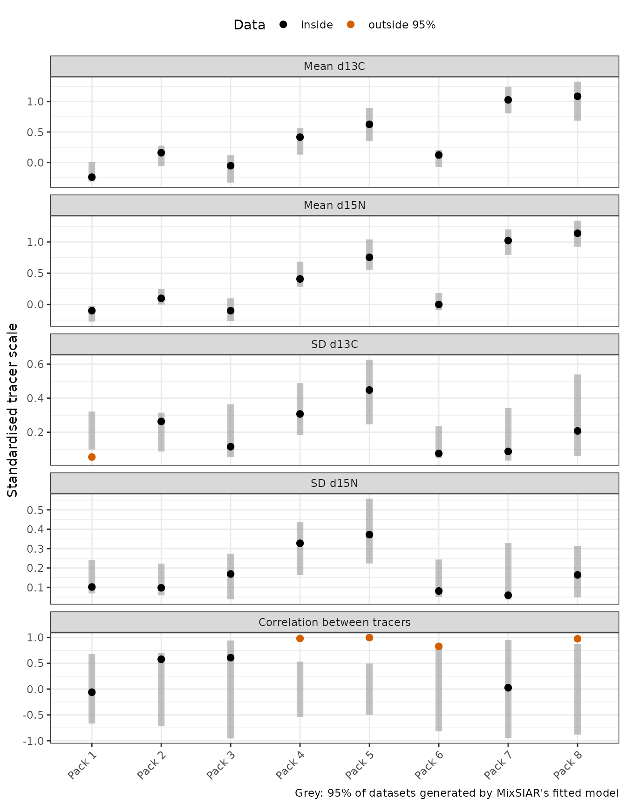
5 of the 40 pack statistics fall outside the 95% range of the model’s datasets (4 outside 99%). For six datasets simulated from MixSIAR’s own model with the same design the count is 0 to 2 (about 2 are expected by chance). The clearest failure is the correlation between δ¹³C and δ¹⁵N within packs: Pack 4 0.98, Pack 5 1.00, Pack 6 0.83, Pack 8 0.97, where the model’s datasets give about 0. The wolves of these packs lie on a line in isospace, which is what wolves eating different mixes of the same prey would produce. MixSIAR’s model has no diet variation between the wolves of a pack, so it can only treat that spread as residual error. The checks on the whole dataset (each tracer’s mean, SD and range, and the total log-likelihood) pass, so MixSIAR’s usual output would not show this.
Where the model does not fit, MixSIAR’s posterior is not a correct answer for MixSIARPFN to match, and the two can differ more. Here the two fits differ most in the packs that fail the check, and in pack 7, whose four wolves are too few for the check to say much (the model’s datasets give its correlation anywhere from about -0.95 to 0.95):
| Pack | Statistics outside 95% (of 5) | Mean W1, MixSIARPFN against MixSIAR |
|---|---|---|
| Pack 1 | 1 | 0.009 |
| Pack 2 | 0 | 0.017 |
| Pack 3 | 0 | 0.012 |
| Pack 4 | 1 | 0.051 |
| Pack 5 | 1 | 0.052 |
| Pack 6 | 1 | 0.053 |
| Pack 7 | 0 | 0.109 |
| Pack 8 | 1 | 0.097 |
The mean W1 is 0.063 for the packs whose tracers are strongly correlated, against 0.013 for packs 1, 2, 3. On data like these, the differences between MixSIARPFN and MixSIAR say as much about the model as about either method: both are fitting a model that leaves out structure the data show.